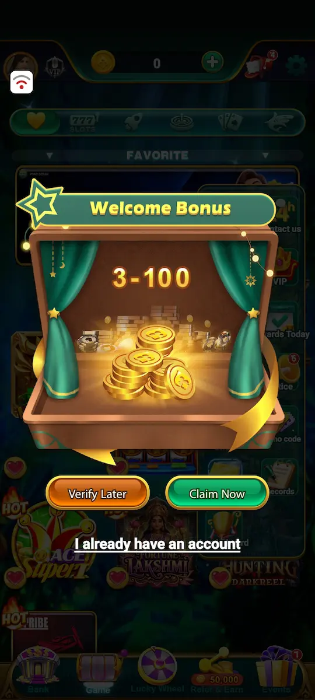
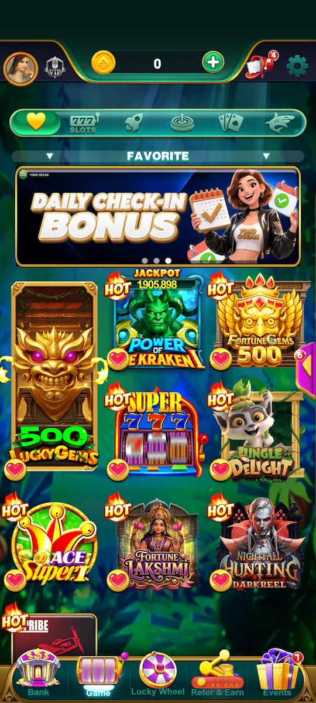
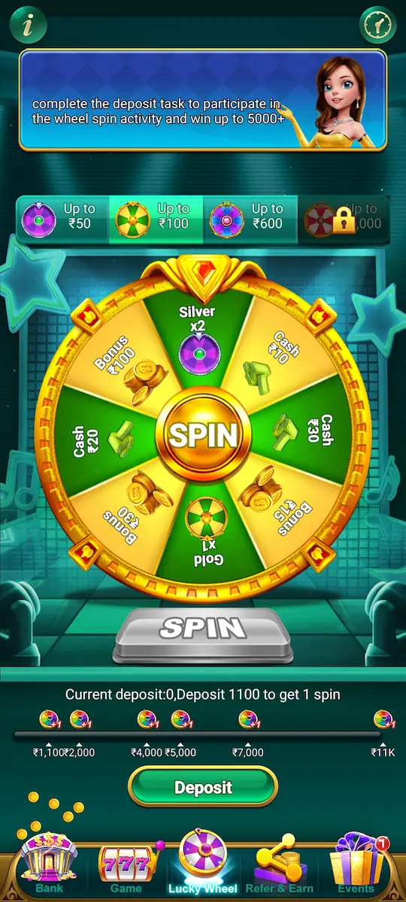
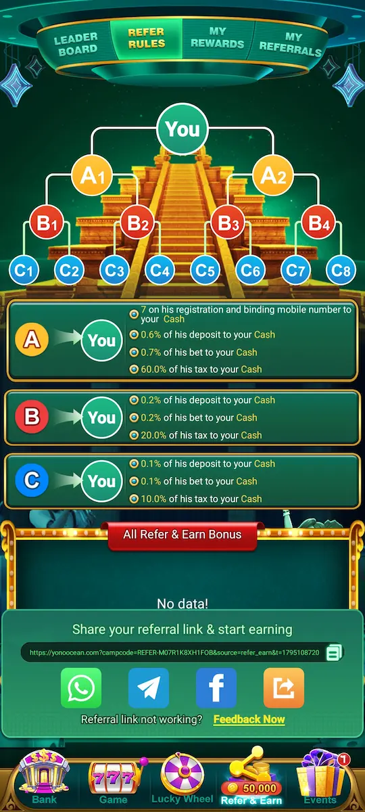
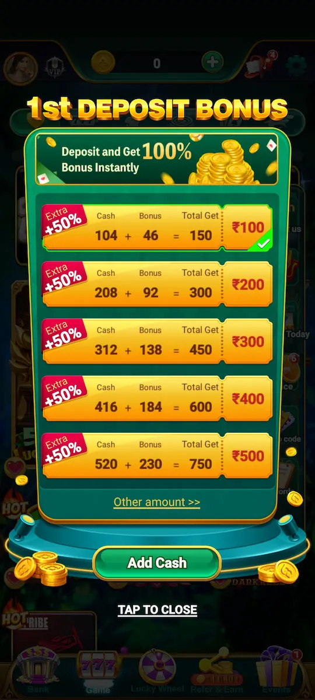

Yono Ocean
Yono Ocean is a Yono-style Android lobby where the welcome screen, the lucky wheel and the games grid share one wallet, and only withdrawable balance can move to UPI.
Yono Ocean Overview
Yono Ocean is a Yono-family cash app for Android, and the name does not mean you are dropped into one underwater slot. The screens that matter are a welcome bonus, a games grid, a lucky wheel, an earn desk and a deposit page. The current listing is version 3.2.0 at 38.40 MB, released 12 Nov 2026. The first stop after install is the welcome screen. You enter a mobile number, set a password and confirm the OTP, then the offer printed on that screen can be claimed. That printed figure is the ceiling for the account in front of you. It is not a promise that every signup is handed the same amount, and it does not arrive as money you can send to UPI.
The games grid is a normal Yono mix. Teen Patti is the three-card boot, 13-card rummy covers points and pool, and Andar Bahar plus Dragon Tiger are the short rounds for people who do not want a long hand. Slot tiles sit in the same lobby when you want a spin instead of cards. Stakes leave the cash balance. A winning round comes back as cash, still inside the app. The lucky wheel is not the welcome screen under another name. It has its own limited spins, and each slice has to be read: some are bonus chips, some are a small cash credit, and some are simply another turn. The earn screen is referrals. A friend has to sign up and usually play or add cash before anything shows on your side, so an invite link is not cash you already hold.
What stands out once you have actually opened Yono Ocean:
- Welcome screen after mobile OTP, with the printed amount as a ceiling and the credit kept as bonus until wagering is done
- Games grid with Teen Patti, 13-card rummy, Andar Bahar, Dragon Tiger and slot tiles
- Lucky wheel on its own screen, with limited spins and slices that are often bonus rather than cash
- Earn desk for referrals, paid only after the invited account actually qualifies
- Deposit by UPI or bank, and cashouts from ₹100 once the balance is withdrawable and the name matches KYC
The wallet is the part that decides whether a win is yours. Bonus, cash and withdrawable sit in separate piles, so a wheel slice or a welcome credit does not slide onto PhonePe. On this style of Yono app the cashout floor is ₹100, sent to a UPI ID or bank account in your own name. Confirm that floor on the withdraw tile, because a skin can move it. Some requests clear in a few minutes. Others wait on wagering or a document check. Real-money play is 18+ only, and it is worth checking the rules in your state before you add funds. Treat the rounds as paid entertainment, not as income.
Yono Ocean Gameplay & Screenshots





Yono Ocean FAQ
Common questions users often ask.
Open this Vulugames page on your Android phone and tap Generate Download Link to fetch the Yono Ocean APK. In Settings, allow installs from your browser or file manager, then open the file and tap Install. The current build is version 3.2.0 and the file is 38.40 MB. When the app launches, open the welcome screen, enter your mobile number, set a login password, and confirm the OTP before you touch the wheel or the games grid.
The games screen is a lobby, not one ocean slot. You can sit at Teen Patti, open 13-card rummy, take a short Andar Bahar or Dragon Tiger round, or move into the slot tiles. The lucky wheel is a separate screen with a limited number of spins, and a slice can be bonus chips rather than cash. Stakes come off your cash wallet. A winning round returns to cash balance. Bonus funds, including a welcome credit and most wheel slices, stay locked until that offer's wagering rule is met.
No. The welcome screen shows an offer you claim after the mobile OTP, and the figure printed there is the ceiling for that account, not a fixed gift on every signup. It is credited as bonus, not as withdrawable cash. The lucky wheel is a different screen and a different offer, so a wheel slice does not replace the welcome claim. Check the wagering line on the welcome screen before you deposit, because a bonus balance cannot move to UPI until that line is finished.
Add a bank account or UPI ID that matches the name on your KYC. On this style of Yono wallet the cashout floor is ₹100, taken from withdrawable balance only, so confirm that floor on the withdraw tile in case this build shows a different number. Bonus from the welcome screen, the earn desk or the lucky wheel has to be wagered before it can move. After you request a cashout, some UPI transfers show within a few minutes and others pause for a document or wagering check. A pending status is a hold, not proof the payout failed.
Install failures usually come from a blocked unknown-sources setting, a half-downloaded APK, or low free storage. The current file is 38.40 MB, so a phone with almost no space left will fail. Delete the old file, stay on a stable connection, allow the install, and try again. If the lobby stutters, the lucky wheel art and the slot tiles are heavy on a weak network. Switch to Wi-Fi, close background apps, or install the current 3.2.0 build over the old one.
Yono Ocean APK Information
New Realised to Yono Ocean
New picks based on mixed category, keywords, and popularity.
New Releases
Related picks
Top 12 Popular
Download the top popular real money games.